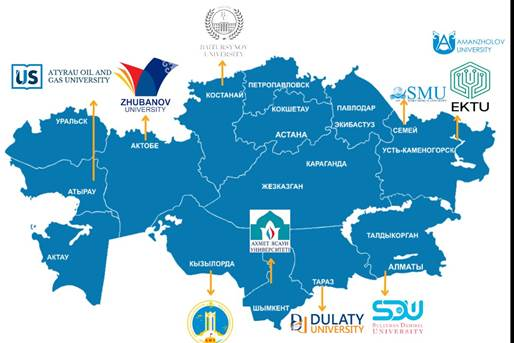
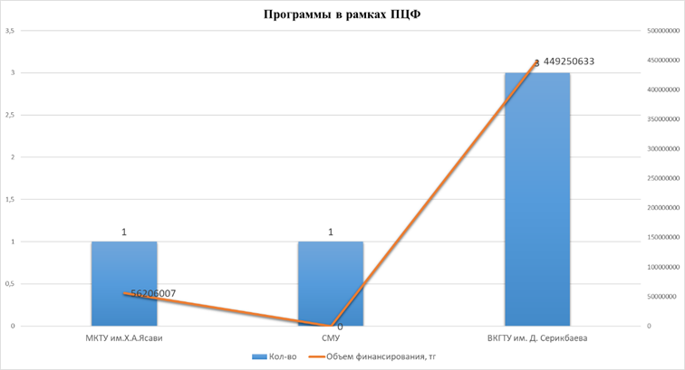

Одной из характерных черт казахстанских научно-производственных центров и технологических парков является их расположение на территории крупных предприятий с привлечением к работе ведущих высших учебных заведений и научно-исследовательских институтов. Так, 2 из 10 отечественных технопарков расположены на территории вузов, таких как КазНУ им. аль-Фараби, НПУ им.К.Сатпаева; остальные 8 осуществляют свою деятельность на территории промышленных предприятий и научных центров. Большая часть технопарков Казахстана, находится в крупных городах или промышленных центрах с наличием научных учреждений и квалифицированных специалистов.
Развитие региональных ОВПО с целью решения отраслевых или региональных проблем, в связи с чем проведен анализ 10-ти ОВПО:

|
№ |
Наименование ОВПО (Аббревиатура) |
Наименование ОВПО |
|
1 |
«ТарГУ им. М.Х.Дулати» |
НАО «Таразский региональный университет имени М.Х.Дулати»; |
|
2 |
АРУ им. К.Жубанова |
НАО «Актюбинский региональный университет имени К.Жубанова» |
|
3 |
МКТУ им.Х.А.Ясави |
Международный казахско-турецкий Университет имени Х. А. Ясауи; |
|
4 |
СМУ |
Медицинский университет Семей; |
|
5 |
SDU |
Университет имени Сулеймана Демиреля; |
|
6 |
Korkyt Ata University |
Кызылординский университет им.Коркыт Ата; |
|
7 |
КРУ им. А.Байтұрсынұлы |
Костанайский региональный университет имени А. Байтурсынова;» |
|
8 |
АУНГ |
Атырауский университет нефти и газа имени Сафи Утебаева |
|
9 |
ВКГУ им. Аманжолова |
НАО «Восточно-Казахстанский университет имени Сарсена Аманжолова» |
|
10 |
ВКГТУ им. Д. Серикбаева |
НАО «Восточно-Казахстанский технический университет имени Д. Серикбаева |
3.4.1 Программы, проекты, научные гранты, международные научные гранты, хоздоговорные работы с предприятиями
|
|
|
|
|
 |
||
|
Диаграмма А
Диаграмма B
Диаграмма С
Диаграмма D |
|
Анализ показал, что все десять ОВПО выполняют научные работы в рамках программы ПЦФ, грантов ГФ, международных грантов, осуществляют хоздоговорные работы с предприятиями.
В 2020-2022 гг. в рамках ПЦФ НИР выполняли 5 организаций – Международный казахско-турецкий Университет имени Х.А. Ясауи (2); Медицинский университет Семей (3); НАО «Восточно-Казахстанский университет имени Сарсена Аманжолова» (1); Восточно-Казахстанский технический университет им. Д.Серикбаева (6). Университет имени Сулеймана Демиреля (1) – всего 11.
За этот же период выполнены НИР в рамках проектов ГФ во всех 10-ти ОВПО, освоены значительные суммы (см.таблицу 1): «Таразский региональный университет имени М.Х.Дулати» (21); Актюбинский региональный университет имени К.Жубанова(49); Международный казахско-турецкий Университет имени Х. А. Ясауи (48); Медицинский университет Семей(7); Университет имени Сулеймана Демиреля(5);Кызылординский университет им.Коркыт Ата(32);Костанайский региональный университет имени А. Байтурсынова (38);Атырауский университет нефти и газа имени Сафи Утебаева(8);НАО «Восточно-Казахстанский университет имени Сарсена Аманжолова»(55); Восточно-Казахстанский технический университет им. Д. Серикбаева (34). Всего выполнено проектов – 297.
Кроме того, 7 ОВПО, кроме Медицинского университета Семей; Университета имени Сулеймана Демиреля; Атырауского университета нефти и газа имени Сафи Утебаева, выполняют международные гранты: «Таразский региональный университет имени М.Х.Дулати» (5); Актюбинский региональный университет имени К.Жубанова(7);Международный казахско-турецкий Университет имени Х. А. Ясауи (2); Кызылординский университет им.Коркыт Ата(4);Костанайский региональный университет имени А. Байтурсынова (9); НАО «Восточно-Казахстанский университет имени Сарсена Аманжолова»(8); Восточно-Казахстанский технический университет им. Д. Серикбаева (2).
Хоздоговорными работами с предприятиями охвачены 8 из 10 ОВПО: Таразский региональный университет имени М.Х.Дулати (13); Актюбинский региональный университет имени К.Жубанова (7); Международный казахско-турецкий Университет имени Х. А. Ясауи (26); Кызылординский университет им.Коркыт Ата (2); Костанайский региональный университет имени А. Байтурсынова (204); Восточно-Казахстанский университет имени Сарсена Аманжолова»(10); Восточно-Казахстанский технический университет им. Д. Серикбаева (1046).
Таким образом, количество выполненных с предприятиями хоздоговорных работ, свидетельствует о том, что Костанайский региональный университет имени А. Байтурсынова (204 договора), Восточно-Казахстанский технический университет им. Д. Серикбаева (1046 договора) работают в условиях, максимально приближенных к производству. Также количество выполненных программ и проектов свидетельствует о том, что анализируемые ОВПО имеют достаточный научный и кадровый потенциал для выполнения НИР и получения необходимых научных результатов.
3.4.2 Сведения о земельных участках, зданиях и сооружениях по состоянию на 01.11.2023 г.
Анализ показал, что все ОВПО имеют земельные участки, здания и сооружения для проведения научной и хозяйственной деятельности: учебные корпуса, лаборатории, общежития, спортивные сооружения, подсобные помещения, теплицы, дворцы молодежи, служебные квартиры и т.д.
Так, в активе МКТУ им.Х.А.Ясави имеется 1160,3 га, в т.ч. Ботанический сад (86,8 га), 417 га ¬¬- для ведения крестьянского хозяйства, образовательная база - 70 га, а также земельные участки под учебные корпусы, общежития, спортивные сооружения, теплицы.
Таразский региональный университет имени М.Х.Дулати обладает территорией общей площадью 68,0837 га, основную часть которой занимают учебные корпусы – 9, лаборатории – 3, Жастар сарайы, Дом науки, а также подсобные помещения.
Восточно-Казахстанский технический университет имени Д. Серикбаева обладает земельным участком в 51,32 га, а также 56 400,6 м2 – под здания и сооружения.
Таким образом, все ОВПО имеют возможность использовать имющиеся земельные участки и площади под создание научно-производственных, инжиниринговых центров и научно-технологических парков.
3.4.3 Связь с производством (договоры/меморандумы) за 2020-2022 годы
В процессе анализа изучен уровень взаимодействия науки и производства в 10-ти ОВПО, развитие этого процесса и его состояние.
Так, Восточно-Казахстанский технический университет имени Д. Серикбаева в 2020 году заключил 144 соглашения, из них 138 – договоры по хоздоговорным работам, 5 – меморандумы, 1– соглашение о совместной реализации проектов (ПЦФ);
В 2021 году – 173 – из них 154 – договоры по хоздоговорным работам, 14 – меморандумы, 5 – соглашения о совместной реализации проектов (ПЦФ, ГФ). В 2022 году – 194 – из них 173 – договоры по хоздоговорным работам, 13 – меморандумы, 7 – соглашение о совместной реализации проектов (ПЦФ, ГФ, коммерциализация).
Кызылординский университет имени Коркыт Ата в 2020 году заключил соответственно договоров/меморандумов – 375/37, в 2021 году – 510/59, в 2022 году – 646/63.
Восточно-Казахстанский университет имени Сарсена Аманжолова заключил договоров в 2020г. – 111, в 2021 г. – 108, в 2022г.– 106.
Медицинский университет Семей, SDU University заключенных договоров/меморандумов не имеет.
Таким образом, данные ОПВО, понимая важность усиления взаимодействия науки и производства, стремятся наладить связь с организациями для получения результатов научных исследований, опытных образцов, новых технологий, а также внедрения научных разработок.
3.4.4 Сведения об основной аппаратурно-приборной базе за 202-2022 годы
Анализ 10-ти ОВПО, занимающихся научными исследованиями и разработками, показал, что в 9-ти из них имеется дорогостоящее и уникальное оборудование, состояние которого оценивается как удовлетворительное, хорошее и новое. В процентном отношении оценка «хорошее» составляет около 60%, «новое» – около 70%, «удовлетворительное» – более 10%, «неудовлетворительное» – 2%, «в нерабочем состоянии» – 1%.
Так, Восточно-Казахстанский технический университет имени Д. Серикбаева, Кызылординский университет имени Коркыт Ата, Восточно-Казахстанский технический университет имени Д. Серикбаева, МКТУ им. Х.А.Ясави имеющееся лабораторное обрудование характеризуется как новое, удовлетворительное и в хорошем состоянии.
В то же время указанные в Медицинском университете Семей 2 лабораторных оборудования – квадрупольный масс-спектрометр с индуктивно связной плазмой модели iCAP-Qc и микроскоп Leica Microsystems DM2500, необходимые для проведения НИР, находятся в неудовлетворительном состоянии. Для проведения полноценных исследований необходимо приобрести новое оборудование.
SDU University данные наличии лабораторного оборудования не представил.
Таким образом, анализ показал, что в анализируемых ОВПО приборный парк обновляется, лабораторное оборудование для проведения научных исследований имеется, подавляющее большинство из них приобретено за последние годы и находится в хорошем либо удовлетворительном состоянии.
3.4.5 Сведения о коммерциализуемых проектах за 2020-2022 годы
Процесс коммерциализации непосредственно связан с получением коммерческого эффекта от применения инновационного продукта или технологии, являющихся результатами научных исследований и разработок.
За 2020-2023 годы коммерциализации научных работ добились две научные организации – МКТУ им.Х.А.Ясави и Кызылординский университет имени Коркыт Ата.
В МКТУ им. Х.А. Ясави количество готовых проектов к коммерциализации за 3 года составило 6, коммерциализируемых научных разработок – 5. Объем финансирования коммерциализируемых научных разработок составил в 2020 г. – 44 367,70 тг.; в 2021 г.– 218 657,4 тг.; в 2022 г.– 5 292,9 тг. Прибыль от коммерциализируемых проектов получена в 2020г.– 530,00 тг.; в 2021г. – 21624,9 тг.;2022г. – 6176,5 тг. Доля коммерциализируемых научных разработок от общего количества прикладных научных исследований, финансируемых из бюджета, составила в 2020 г. – 0,26%; в 2021 г. – 4,85%; в 2022 г.– 1,96%.
В 2022 году НАО «Кызылординский университет имени Коркыт Ата» вышел на коммерциализацию результатов научной деятельности на сумму 10000000 тг, Доля коммерциализируемых научных разработок от общего количества прикладных научных исследований, финансируемых из бюджета, составила 10%. В других анализируемых ОВПО – коммерциализации результатов НИР не имеется.
3.4.6 Сведения об основных результатах научной и инновационной деятельности
Рост публикационной активности в 2022 году в целом наблюдался во всех 10-ти ОВПО: 906 (2020 г.), 998 (2021 г.), 1067 (2022г.). Также возросло количество публикаций в зарубежных изданиях Web of Science – 281 (2020г.), 265 (2021г.), 324 (2022г.); в Scopus – 659 (2020г.),763 (2021г.),784(2022г.).
Наиболее результативны оказались ученые МКТУ им. Х.А. Ясави, опубликовавшие 158 (2021г.), 191 (2021г.), 182 (2022г.) научных статей.
Учеными Восточно-Казахстанский технический университет им. Д. Серикбаева опубликовано соответственно 145, 160, 146 научных статей. В данных ОВПО высокий уровень публикаций и в зарубежных изданиях Web of Science, Scopus.
Наименьшее количество публикаций в Атырауском университете нефти и газа имени Сафи Утебаева – 9 (2020),10 (2021),16(2022г.).
Количество охранных документов на интеллектуальную собственность составило 145 (2020г.),147(2021г.),172 (2022г.).
Наиболее высокие показатели по количеству охранных документов имеют НАО «Таразский региональный университет имени М.Х.Дулати» (131), Костанайский региональный университет имени А. Байтурсынова (94), Атырауский университет нефти и газа имени Сафи Утебаева (74), Кызылординский университет им. Коркыт Ата (41).
Низкие показатели в НАО «Актюбинский региональный университет имени К.Жубанова», Восточно-Казахстанском техническом университете им. Д. Серикбаева – 8 и 4 соответственно за 2020-2023 годы. Охранных документов не имеется в Университет имени Сулеймана Демиреля.
Количество актов внедрения в производство составило во всех анализируемых научных организациях 185 – 65(2020г.), 44 (2021г.), 76 (2022г.). Высокими показателями отличается Костанайский региональный университет имени А. Байтурсынова – 48 (2020г.), 20 (2021г.), 45(2022г.), всего – 113; Кызылординский университет им.Коркыт Ата – 3,10,15, всего 28. По 9 внедрений у НАО «Восточно-Казахстанский университет имени Сарсена Аманжолова» и Восточно-Казахстанский технический университет им. Д. Серикбаева.
Медицинский университет Семей, Университет имени Сулеймана Демиреля внедрений в производство не имеют.
3.4.7 Сведения о научно-производственных, инжиниринговых центрах и научно-технологических парках в 2022 году
Как показал анализ, при НАО «Таразский региональный университет имени М.Х.Дулати» действует 2 НПЦ на территории площадью 1 135,3 м2.
Наиболее крупным является парк инновационнных технологий МКТУ им.Х.А. Ясави, занимающий площадь 1680 м2.
При НАО «Восточно-Казахстанский технический университет имени Д. Серикбаева» создан Центр компетенции «Smart engineering», площадь которого составляет 530 м2.
При НАО «Восточно-Казахстанский университет имени Сарсена Аманжолова» и НАО «МУС» научно-производственный, инжиниринговый центр либо научно-технологический парк не имеется.
3.4.8 Сведения о кадровом потенциале ОВПО за 2022 год
Анализ показал, что всего в 10-ти ОВПО в 2022 году работало 6217 ученых, в том числе докторов наук – 2016 (32,4%), кандидатов наук – 803 (12,9%), PhD – 2282 (36,7), магистров – 1559 (25,1%), молодых ученых до 40 лет – 409 (6,5%).
В 5-ти организациях наибольшее количество составляют доктора наук – 803, в том числе в НАО «Таразский региональный университет имени М.Х.Дулати» -32, кандидатов наук -232, PhD-71, магистров – 468, молодых ученых -28.
Наибольшее количество научных работников по остепененности наблюдается в МКТУ им.Х.А.Ясави (2022г. – 1067); НАО «Таразский региональный университет имени М.Х.Дулати» (2022 г. – 936); НАО «Кызылординский университет имени Коркыт Ата» (2022г.– 856).
Наименьшее количество в Атырауский университет нефти и газа имени Сафи Утебаева (2022г.–110), НАО «Восточно-Казахстанский технический университет имени Д. Серикбаева» (2022 г.– 292).
Таким образом, в подавляющем большинстве региональных ОВПО (МКТУ им.Х.А.Ясави; НАО «Таразский региональный университет имени М.Х.Дулати»; НАО «Кызылординский университет имени Коркыт Ата», НАО «Актюбинский региональный университет имени К.Жубанова», НАО «КРУ имени Ахмет Байтұрсынұлы», НАО «ВКУ им. С.Аманжолова», Атырауский университет нефти и газа имени Сафи Утебаева) имеется достаточный кадровый потенциал для проведения научных и научно-технических работ, а также для создания на основе данных ОВПО научно-производственных, инжиниринговых центров либо научно-технологических парков.
РЕКОМЕНДАЦИИ. С целью трансформации ОВПО в научно-производственные, инжиниринговые центры и научно-технологические парки по решению отраслевых или региональных проблем рекомендуется:
- кроме программ ПЦФ, грантов ГФ, международных грантов, необходимо увеличивать количество хоздоговоров, меморандумов с предприятиями на проведение научных работ, внедрения результатов научных исследований и коммерциализацию проектов, как это практикуется в Восточно-Казахстанский технический университет имени Д. Серикбаева, Кызылординский университет имени Коркыт Ата, Восточно-Казахстанский университет имени Сарсена Аманжолова.
- увеличивать приборный парк, обновлять лаборатороное оборудование не только за счет финансирования ПЦФ, ГФ, но и за счет спонсорских, а также собственных средств;
- увеличивать количество научных публикаций, охранных документов, внедрений, что свидетельствует об успешности и результативности научных исследований;
- создавать научно-производственные, инжиниринговые центры и научно-технологические парки на основе крупных исследовательских ОВПО, особенно в регионах, с привлечением инвестиций, что будет способствовать развитию науки не только в крупных городах, вовлеченности молодежи в науку, достижению результатов научной деятельности;
- укреплять кадровый потенциал в региональных ОВПО, создавать необходимые условия для молодых ученых (финансирование, производственные, бытовые и др. условия) для проведения научной работы.
ЗАКЛЮЧЕНИЕ. Анализ региональных ОВПО на предмет перспективности трансформации в научно-технологические парки, инновационные кластеры, центры коммерциализации технологий по решению отраслевых или региональных проблем показал, что полноценная инновационная деятельность не может развиваться без принципиально новых хозяйственно-территориальных образований (научно-производственных центров, технопарков, региональных инновационных кластеров и др.).
В настоящее время при Таразский региональный университет имени М.Х. Дулати» действует 2 НПЦ, при МКТУ им.Х.А. Ясави - парк инновационнных технологий, при НАО «Восточно-Казахстанский технический университет имени Д. Серикбаева» - Центр компетенции «Smart engineering». На их основе возможна трансформация в технопарки по таким отраслям экономики, как машиностроительная промышленность, в т.ч. роботостроение, инструментальная промышленность; выпуск оборудования для легкой промышленности, пищевой промышленности, промышленности бытовых приборов и машин, нефтегазовой промышленности, цифровизация и др.
В ноябре текущего года на базе Кызылординского университета имени Коркыт Ата состоялось открытие Высшей школы искусственного интеллекта и информатики. В рамках проекта университет будет оснащен современным лабораторным оборудованием из Кореи. Впоследствии данная Школа может трансформироваться в инновационный кластер, специализирующий в сфере искусственного интеллекта.
Большие перспективы по открытию Центра коммерциализации технологий у Атырауского университета нефти и газа имени Сафи Утебаева, который может заниматься разработкой новых технологий, выпуском различного оборудования для нефтесервисных компаний и недропользователей.
Имеются возможности по открытию инновационных кластеров при Восточно-Казахстанского университета имени Сарсена Аманжолова; Актюбинского регионального университета имени К.Жубанова, Медицинский университет Семей; Университет имени Сулеймана Демиреля; Костанайский региональный университет имени А. Байтурсынова, Кызылординский университет имени Коркыт Ата по таким перспективным направлениям, как туризм; пищевая промышленность; текстильная промышленность; транспортно-логистические услуги; производство строительных материалов и др.
Таким ОВПО, как Медицинский университет Семей; Университет имени Сулеймана Демиреля; Костанайский региональный университет имени А. Байтурсынова необходимо укреплять как кадровый, так и научный потенциал, а также материально-техническую базу.
Дальнейшая успешная деятельность технопарков, инновационных кластеров, центров коммерциализации технологий, созданных на базе крупных ОВПО, позволит в регионах более эффективно использовать имеющийся научно-технический потенциал, финансовые и трудовые ресурсы, способствовать решению социально-экономических проблем и развитию экономики в регионах.